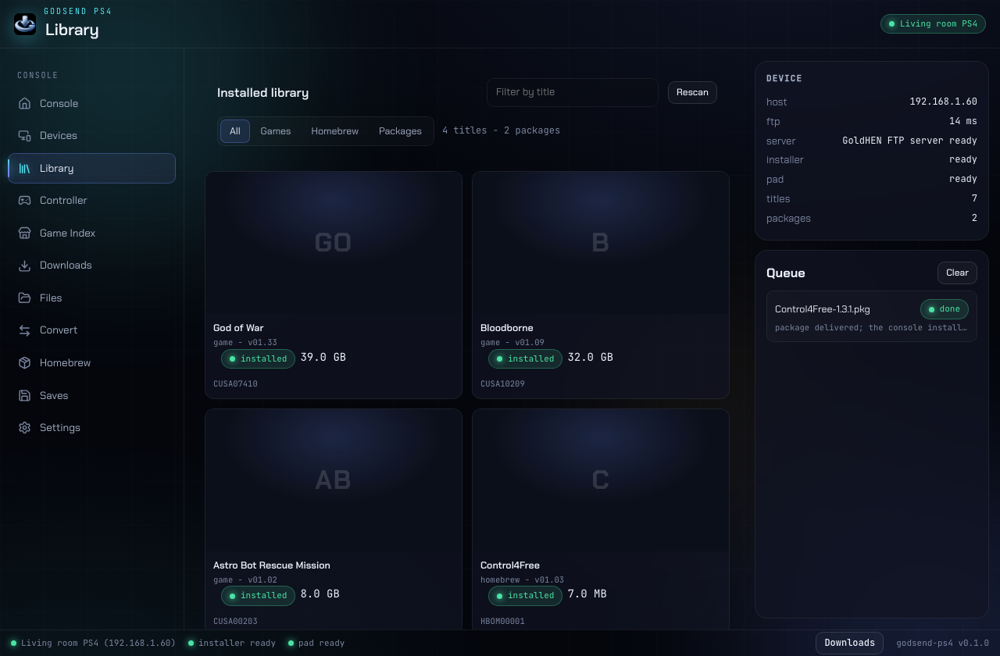
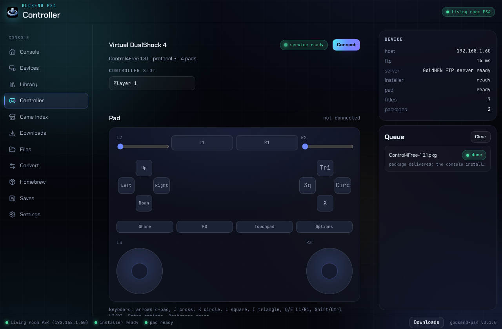
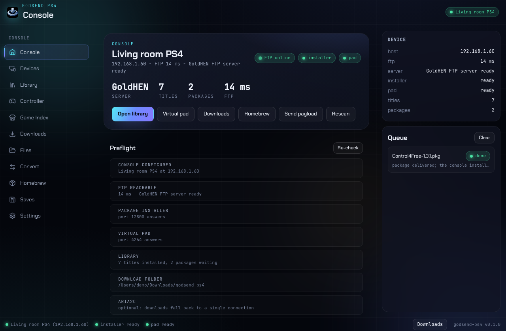
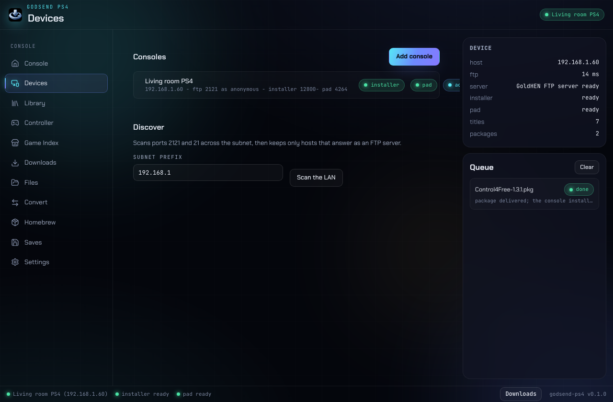
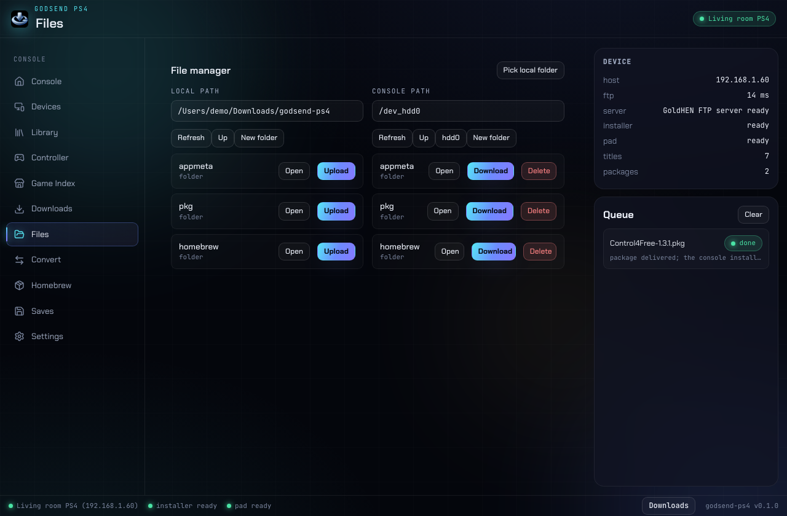
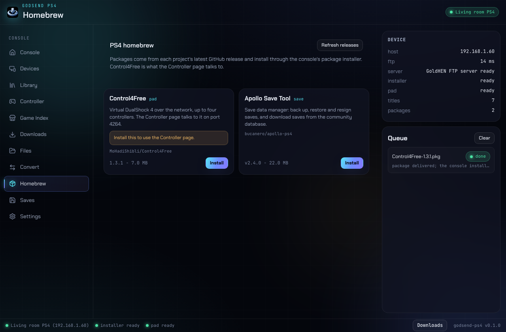

Console status
FTP latency and banner, installer and pad reachability, installed title and package counts, all probed from the real ports.
Connect over FTP, see what is installed, stream a package straight into the console's installer, drive it with a virtual DualShock 4, and keep saves and conversions in the same window.
GoFile is the primary mirror, file.kiwi is the encrypted backup. Links refresh weekly.
| Build | GoFile | file.kiwi | Size |
|---|---|---|---|
| Fetching the current build... | |||






The parts of managing a GoldHEN PS4 that usually need three tools and an FTP client.
FTP latency and banner, installer and pad reachability, installed title and package counts, all probed from the real ports.
Installed titles from appmeta with icons, ids and versions. Patches and DLC stay out of the grid; packages waiting in /user/pkg have their own tab.
GoldHEN takes a URL, so the app serves the PKG over a one-shot HTTP server and lets the console pull it, resume support included. A 40 GB title is never copied twice.
Buttons, triggers, both sticks, PS, share, options and touchpad click, in up to four slots, with keyboard mapping.
Send a .bin or .elf over the bin loader on 9090 from the Console page or the CLI.
List save folders, zip them into the download folder, restore them, delete with a confirmation.
Unpack a PKG to a folder with PFS decryption, split for FAT32, merge a split set.
Two panes, local and console, with tree upload and download and FAT32 splitting on the way to USB.
Input travels over a WebRTC data channel to the Control4Free payload.
The payload opens port 4264 and refuses any request whose
Origin is not its own or null, so the offer
exchange runs in Rust while the app's webview owns the peer connection.
Input goes out at 60 Hz, which also repairs a release lost in transit.
Let an agent drive the console with the same tools you use.
While GODsend PS4 is open it serves the Model Context Protocol on loopback
(default http://127.0.0.1:8744/mcp). Tools cover status,
library, install, payloads, files, conversions, saves, search, homebrew and
the pad service.
claude mcp add --transport http godsend-ps4 http://127.0.0.1:8744/mcp
There is also a stdio binary for clients that spawn their own server: godsend-ps4-mcp.
cargo test --workspace npm --prefix app install npm --prefix app run build npm --prefix app run tauri build
The CLI: cargo build --release -p godsend-ps4-cli, then godsend-ps4 help.
| Need | Why |
|---|---|
| GoldHEN with FTP on 2121 | Every file operation. |
| Remote package installer on 12800 | Installs. Without it the app uploads to /user/pkg instead. |
| Control4Free on 4264 | The virtual controller. Install it from the Homebrew page. |
| aria2c (optional) | 16-connection downloads; without it downloads use one connection. |
| Real-Debrid or TorBox keys (optional) | Resolve debrid links. Internet Archive needs neither. |
| GameSearch backend (optional) | Link resolution for the game index. Browsing works against the public site. |